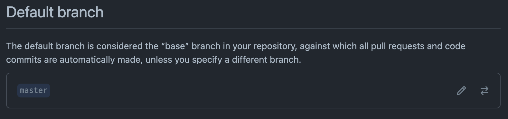

A fully working example is available at https://github.com/robiningelbrecht/continuous-integration-example
Acronyms for
DevOps best practice where developers frequently merge code changes into a central repository where automated builds and tests run.
An automated releaseprocess where you can deploy your application any time by clicking a button.
A CI/CD platform that allows you to
https://docs.github.com/en/actions/learn-github-actions/understanding-github-actions
A runner is a server that runs your workflows when they're triggered
An event is a specific activity in a repository that triggers a workflow run
https://docs.github.com/en/actions/reference/events-that-trigger-workflows
Contains a set of steps that execute on the same runner. Each step is either a
Steps are executed in order and are dependent on each other
name: learn-github-actions
on: [push] # Event
jobs:
install-dependencies:
runs-on: ubuntu-latest # Runner
steps: # Actions
- name: Setup PHP 8.1 with Xdebug 3.x # Pre-defined action
uses: shivammathur/setup-php@v2
with:
php-version: '8.1'
coverage: xdebug
- name: Install dependencies # Shell script
run: composer install --prefer-dist
Small and easy testable app to order pizza
https://github.com/robiningelbrecht/continuous-integration-example/tree/master/src
$pizza = new ExtraCheese(new Pepperoni(new BasicPizza(Size::MEDIUM, Crust::THIN)));
$pizza->getPrice();
// [
// "amount": "1575",
// "currency": "EUR"
// ]
$pizza->getDescription();
// Medium pizza, Thin crust, Tomato sauce, Cheese, Extra cheese, Pepperoni
Using decorators you can wrap objects countless number of times since both target objects and decorators follow the same interface. The resulting object will get a stacking behavior of all wrappers.
$pizza = PizzaBuilder::fromSizeAndCrust(Size::MEDIUM, Crust::THIN)
->withToppings(
Topping::EXTRA_CHEESE,
Topping::PEPPERONI
)
->build();
$pizza->getPrice();
// [
// "amount": "1575",
// "currency": "EUR"
// ]
$pizza->getDescription();
// Medium pizza, Thin crust, Tomato sauce, Cheese, Extra cheese, Pepperoni
Builder is a creational design pattern, which allows constructing complex objects step by step.
$pizza = PizzaFactory::pepperoni(Size::MEDIUM, Crust::THIN)
$pizza->getPrice();
// [
// "amount": "1575",
// "currency": "EUR"
// ]
$pizza->getDescription();
// Medium pizza, Thin crust, Tomato sauce, Cheese, Extra cheese, Pepperoni
(Abstract) Factory is a creational design pattern, which solves the problem of creating entire product families without specifying their concrete classes.
You can set the default branch to whatever you want, but usually "main" or "master" are used.
https://github.com/username/repository/settings/branches
Important to ensure code quality and have a solid CI
All other options should stay unchecked... for now 😎
TODO